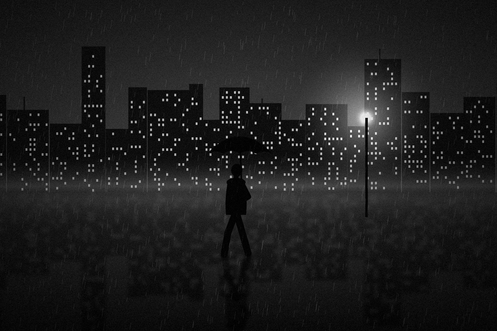
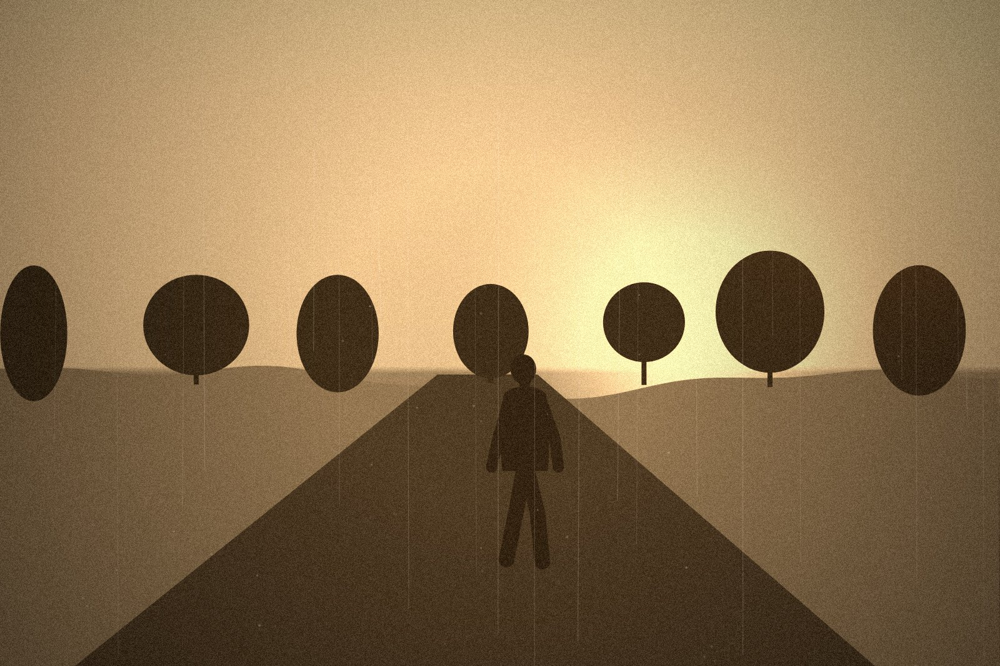

WHERE
I'VE BEEN
My journey through the genres that shaped the way I see — and the stories I keep chasing. Still learning, one frame at a time.
PHOTOGRAPHER · STILL LEARNING
I try to find a story behind every frame — because every frame is unique.
DISCIPLINE & CRAFTSTREET / PORTRAITS / VINTAGE / NATURE / CONCERTS
I'm Prasant Shil Sarma — a photographer who is still learning, because I believe learning never stops in photography. I chase stories on the street, in faces, in faded vintage tones, in quiet nature and under loud concert lights. Every frame is unique, and every frame holds a story.
My journey through the genres that shaped the way I see — and the stories I keep chasing. Still learning, one frame at a time.
CHAPTER 01 CANDID & UNSTAGED
Wandering with a camera, waiting for light, gesture and chance to line up. The street taught me patience — and that the best stories are never staged.

CHAPTER 02 PEOPLE & EMOTION
A portrait is a conversation. I look for the quiet second between poses — when a person stops performing and simply is.
CHAPTER 03 GRAIN & NOSTALGIA
Grain, faded tones and warm light leaks — the soul of film carried into my own frames, giving memories the texture they deserve.

CHAPTER 04 LIGHT & STILLNESS
Mist over hills, rays through trees, the last gold of the day. Nature slows me down and reminds me that light is the real subject.
CHAPTER 05 LIVE & LOUD
Low light, fast moments, loud energy. Capturing the stage and the crowd means reading the music and pressing the shutter on the beat.
Every walk, every gig, every face teaches me something new. This portfolio is a chapter — not the conclusion.
A few frames I keep coming back to
01 / 10
DRAG · SCROLL · CLICK TO VIEW
FRAMES '26
↕ SCROLL OR DRAG TO CYCLE
Honest moments, crafted images — every shoot built around the story you want to tell.
Natural, emotive portraits for individuals, couples and creatives — shot with available light or simple setups to bring out character, not just a face.
Fast, low-light shooting that captures the energy of the stage and the crowd — gigs, festivals, cultural programmes and private events.
Candid, story-driven photo series for brands, publications or personal projects — real people, real places, real moments.
Film-inspired grading, grain and mood — fresh shoots with a vintage soul, or a nostalgic new life for your existing photographs.
Landscapes, light and quiet details from the places I explore — available for collaborations, travel stories and fine-art prints.